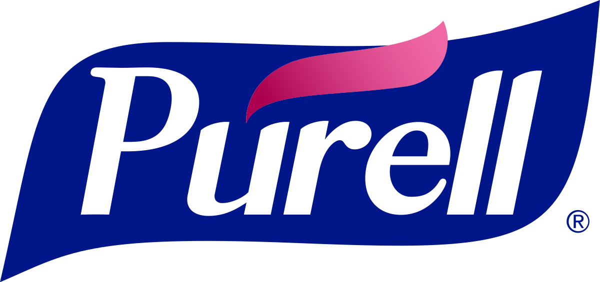
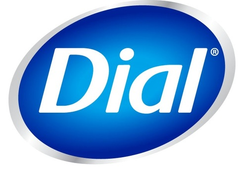
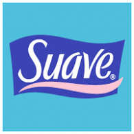

Most used

Purell ● Germ-X
- High alcohol content for effective sanitization
- Contains moisturizers to prevent skin dryness
- Higher price point compared to other brands
Somewhat used

Dial ● Babyganics
- Available in multiple sizes for convenience
- Fragrance-free options and kid-friendly and gentle
- Not eco-friendly
Least used


Suave ● CVS Health
- Have lower alcohol content
- Lack of additional skin care ingredients
- Limited availability and restricted to CVS stores